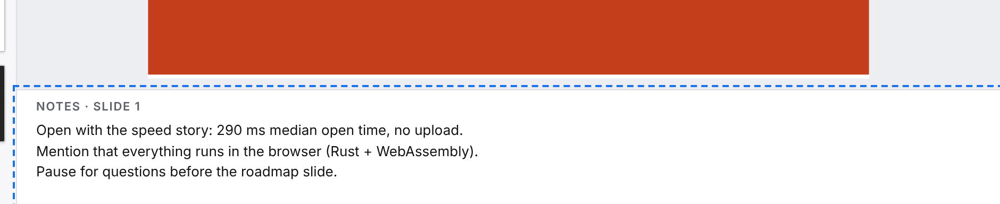
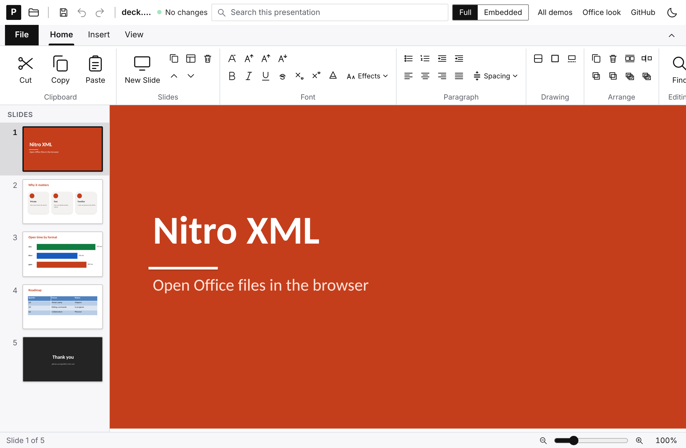
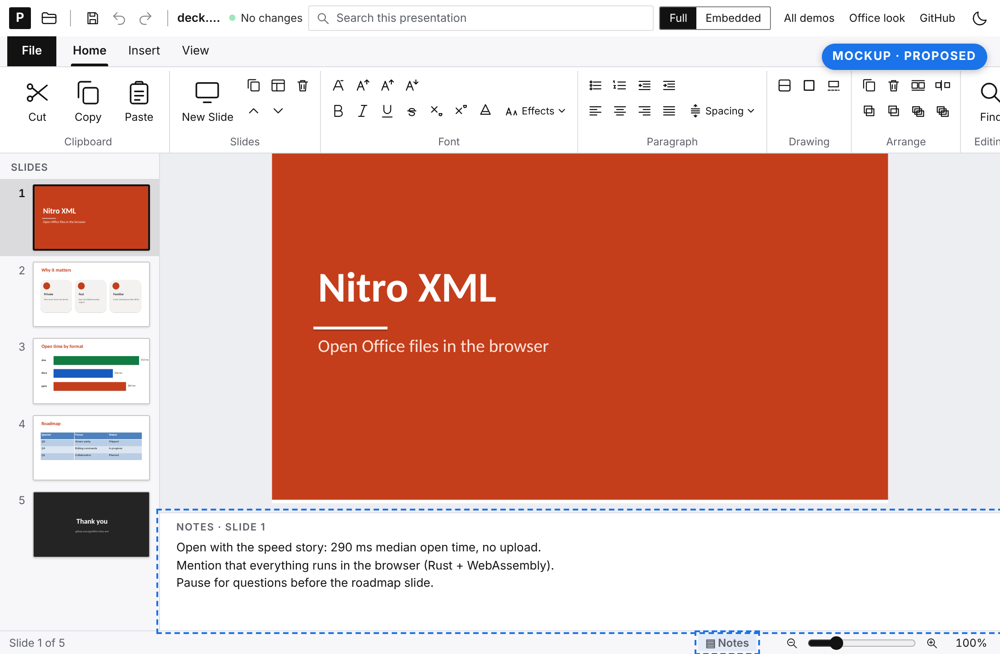

Read and edit speaker notes under each slide
Approved 2026-11-16; queued for the next nightly.
Open issue #541 to vote
Approve: tap 👍 on the issue · Decline: tap 👎
Close-up of the change



Full screen


Today: no way to see a slide's speaker notes, even when the file has them.


Mockup: a Notes pane under the slide plus a Notes toggle in the status bar, like PowerPoint.
Tap an image to open it full size.
Why
Speaker notes are how people prepare and present decks. Nitro already reads and keeps notes when saving, but users can't see or change them, so a deck opened in Nitro looks like it lost its script. A Notes pane with a status-bar toggle matches PowerPoint exactly.
EffortM 2–4 days
RiskMedium. Adding notes to a slide that has none must create valid notesSlide parts (and a notes master if missing) so PowerPoint opens the file without repair.
Perf / bundleA few KB in the lazily loaded PowerPoint chunk; no change to first load. The pane takes ~130 px, so the slide re-fits above it; when the pane is closed, layout is unchanged.
Definition of done
- Notes button in the status bar toggles a resizable pane under the slide; it shows the current slide's notes and follows slide changes.
- Typing in the pane edits the notes, with grouped undo/redo.
- Saved file opens in PowerPoint with the edited notes and no repair prompt, including slides that had no notes before.
- Round-trip and validator checks green on fixtures with and without notes; bundle-budget green.
Open issue #541 to vote
Approve: tap 👍 on the issue · Decline: tap 👎